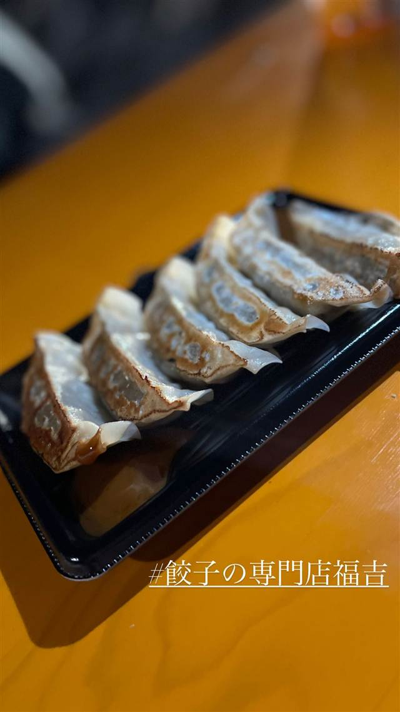

町中華 · 餃子専門 · 伏見
餃子専門店 福吉
にんにく不使用、京都ぽーくと九条ねぎの薄皮餃子
餃子の専門店福吉
京都・伏見にある餃子専門店。にんにくを使わず10種類以上の香辛料と特製みそだれで仕上げた、京都ぽーくと九条ねぎの薄皮餃子が名物。無人販売のテイクアウト専門店も展開している。
TRIVIA
豆知識
- にんにくを使わなくても10種類以上の香辛料で臭みなく旨みを出している
- 京都府オリジナルの銘柄豚「京都ぽーく」を使用している
REVIEWS
世間の評判
3.39食べログ
京都食材のニンニク不使用餃子
- 京都ぽーくや九条ネギなど京都食材を使った餃子を評価する声が多い
- ニンニク不使用でたくさん食べられる点を評価する声がある
- 水餃子やチャーハンなどサイドメニューも美味しいという声がある
食べログ 口コミ134件
| 看板 | 京都ぽーくと九条ねぎを使った薄皮餃子。付属の特製みそだれで食べるのが定番 |
|---|---|
| こだわり | にんにくを一切使わず、10種類以上の香辛料で餡に深い味わいを出す。豚肉は京都府独自のブランド豚「京都ぽーく」を使用 |
| どこから | 遠方 |
| 営業時間 | 月〜日 11:00-22:00 |
| 予算 | 昼 ¥1,000～¥1,999 夜 ¥3,000～¥3,999 |
| 予約 | 予約可 |
| 場所 | 藤森駅 京都府京都市伏見区 |
| メモ | 京都本店は店内飲食可、伏見桃山店はテイクアウト専門の無人販売所 |
食べたもの：餃子(フェス)
NEARBY
近い店・同じ系統の店
-
 餃子専門 亀戸駅
亀戸餃子 本店
座ると自動で2皿確定、1955年創業の下町餃子専門店
昼 ～¥999 夜 ～¥999
餃子専門 亀戸駅
亀戸餃子 本店
座ると自動で2皿確定、1955年創業の下町餃子専門店
昼 ～¥999 夜 ～¥999
-
 餃子専門 幡ヶ谷
您好（ニイハオ）
ひき肉でなく粗く刻んだ肉を使う、連続ビブグルマンの餃子
昼 ¥2,000～¥2,999 夜 ¥2,000～¥2,999
餃子専門 幡ヶ谷
您好（ニイハオ）
ひき肉でなく粗く刻んだ肉を使う、連続ビブグルマンの餃子
昼 ¥2,000～¥2,999 夜 ¥2,000～¥2,999
-
 餃子専門 乃木坂
赤坂珉珉（みんみん）
酢コショウで食べる元祖、渋谷の名店直系ののれん分け店
夜 ¥4,000～¥4,999
餃子専門 乃木坂
赤坂珉珉（みんみん）
酢コショウで食べる元祖、渋谷の名店直系ののれん分け店
夜 ¥4,000～¥4,999
-
 餃子専門 銀座一丁目
銀座天龍 本店
ニンニクを使わず白菜と豚肉だけで作る12cmの大判餃子を創業以来守る
昼 ¥1,000～¥1,999 夜 ¥3,000～¥3,999
餃子専門 銀座一丁目
銀座天龍 本店
ニンニクを使わず白菜と豚肉だけで作る12cmの大判餃子を創業以来守る
昼 ¥1,000～¥1,999 夜 ¥3,000～¥3,999
-
 餃子専門 飯田橋駅
餃子の店 おけ以
東京に焼き餃子を広めた老舗、羽根つき餃子は1日1300個
昼 ¥1,000～¥1,999 夜 ¥1,000～¥1,999
餃子専門 飯田橋駅
餃子の店 おけ以
東京に焼き餃子を広めた老舗、羽根つき餃子は1日1300個
昼 ¥1,000～¥1,999 夜 ¥1,000～¥1,999
-
 餃子専門 恵比寿駅
えびすの安兵衛
高知の屋台仕込み、にんにくの効いたジューシーな餃子
夜 ¥1,000～¥1,999
餃子専門 恵比寿駅
えびすの安兵衛
高知の屋台仕込み、にんにくの効いたジューシーな餃子
夜 ¥1,000～¥1,999